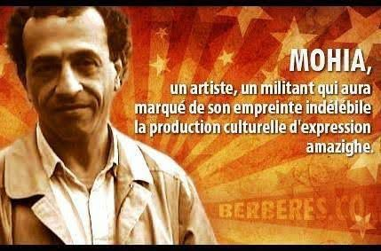

Le maître des mots et des cœurs
À Mohya, 01/11/1950 – 07/12/ 2004
Dans l’ombre des montagnes où danse l'histoire,
Naquit une voix, une flamme, un espoir.
Mohya, fils des montagnes, poète enraciné,
Ton verbe était un feu, ta plume une clé.
Des ruelles d'Azazga aux bancs de Paris,
Tu as porté haut le souffle de la vie.
Mathématicien des mots, artisan des rimes,
Tu as fait de l'art un pont vers les cimes.
Dans chaque rime, une vérité sans détour,
Les douleurs du peuple, ses espoirs d’amour.
Tu as sculpté des vers dans le roc du réel,
Faisant vibrer l’écho de l’âme kabyle.
À travers tes œuvres, une identité gravée,
La Kabylie se lève, libre et revendiquée.
Dans le théâtre des luttes et des traditions,
Tu as sculpté des récits d'émancipation.
Les collines chantaient sous ta plume fertile,
Des légendes anciennes aux luttes subtiles.
La poésie, ton arme, douce et puissante,
Pour défier l’oubli, la nuit oppressante.
Tu as pris Beckett, Brecht et Molière,
Et de leurs écrits, tu as fait ta lumière.
Chaque traduction, une alliance féconde,
Un mariage des cultures, un don au monde.
Ton théâtre, miroir d’un monde oublié,
Réveille les silences, brise les murs figés.
Tu as donné voix à ceux que l’on efface,
Redonnant leur fierté, leur langue, leur place.
Dans tes cassettes, ta voix résonne encore,
Parmi les oliviers et les champs d'aurore.
Tes chansons, écrites pour les cœurs vaillants,
Sont des chants de justice, des cris brûlants.
Mais l’artiste s’efface, laissant l’héritage,
D’un peuple debout, porteur de courage.
À At Ervah, sous la terre natale,
Repose une étoile au cœur loyal.
Aujourd’hui, tes mots traversent le temps,
Mohya, l’éternel, toujours flamboyant.
Dans chaque souffle kabyle,
Vibre ton écho, fier et indocile.
Ô frère des montagnes, esprit des vallées,
Que ton chant demeure, jamais étouffé.
Pour que chaque cœur, au fil de l’histoire,
Puisse trouver en toi un éclat d’espoir.
En toi, la mémoire s’éveille et s’élève,
Et l’identité berbère jamais ne s’achève.
Dans les livres, les chants, les planches, les cœurs,
Mohya, tu es vivant, pour toujours éclaireur.
Djamel Metref
At Yenni le 8 décembre 2024

← Tous les poèmes